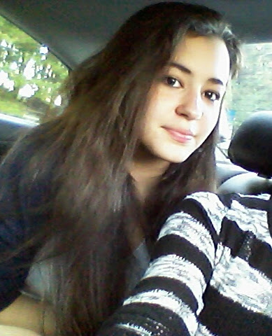

About Us
Anisley Vera
I am a senior in high school and joined the girls who code program to try something new. I want to go to college to major in computer science and minor in business. I hope to be involved in the Girls Who Code program in my school and inspire other girls my age and younger to become involved in STEM.
Prayer Thakar
Hi, my name is Prayer Thakar and I am a rising senior at AHS. I joined the Girls Who Code program out of my school's club, that Synchrony finances. I have been interested in IT and computers since a young age and always had a habit of breaking and fixing things. I hope to open a GWC club in my school in the future and start a pathway for girls in AHS to become involved in the tech industry.
Maddy Jaime
My name is Maddy and I am a rising junior in Jonhs Creek high school. I joined the Girls Who Code program to improve my coding skills and learn how to use them in the future. I enjoyed my time and exeriences at GWC and loved the amazing new friends and memories I made.
Shivani Bharadwaz
My name is Shivani Bharadwaz and I am a rising senior at Lambert High School. I am interested in majoring in Film and Photography or Social Work. I applied to this program to learn something new and explore the IT field to see if it would be a viable career option for me. I have really enjoyed the experience, everything I have learned and all the amazing new friends I have made here!